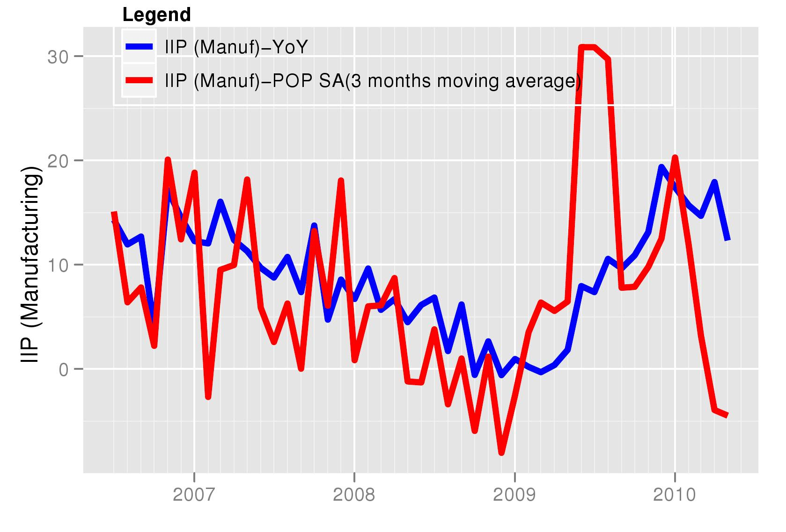
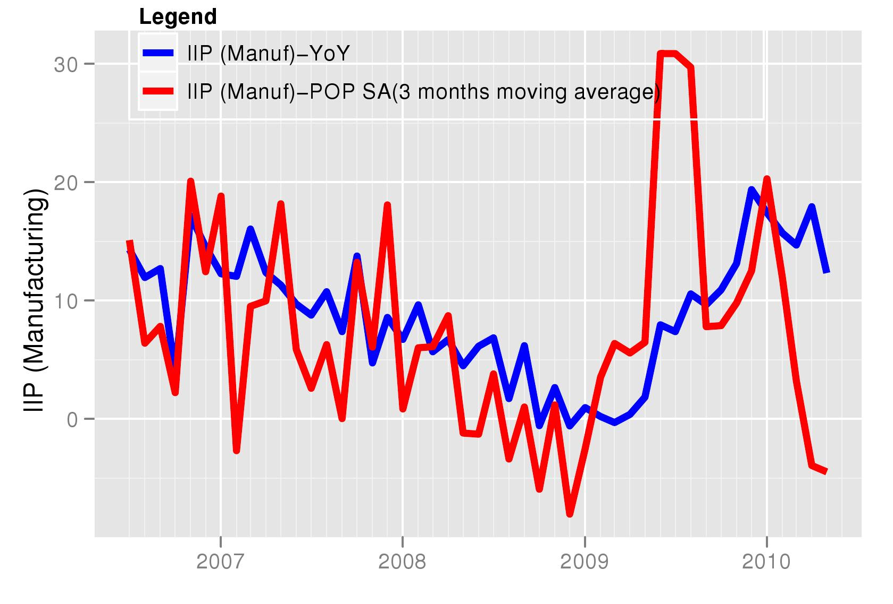

Behind the curve?
Financial Express, 24 July 2010
The RBI's credit policy is due later this month. The lastest data for industrial production and prices released in the July will make the RBI's policy dilemma worse. Industrial production declined in May while core inflation rose sharply. No simple prescription for monetary policy is applicable in such a situation.
For understanding the latest trends in production and prices we look at seasonally adjusted data available from NIPFP at http://www.mayin.org/cycle.in/tracking.html. Industrial production data shows that the upswing seen since June 2010 is no longer visible. This is shown in the accompanying figure which shows month on month IIP growth for seasonally adjusted data. The latest figure shows data for May 2010 which witnessed a decline in the seasonally adjusted level of industrial production. This scenario is not consistent with the view that industrial production in India is running at full capacity and that there is a need to tighten monetary and fiscal policies to prevent overheating and inflation. The graph for IIP manufacturing shows the same thing. Seasonally adjusted industrial produciton actually saw a decline in May.
 

While month on month growth saw a decline in seasonally adjusted industrial production, this problem does not show up yet in the annual year on year inflation numbers (also seen in the graphs). The year on year numbers show a small decline in the growth rate and will be able to capture the decline with a five and a half month lag. The difficulty for policy makers of declining growth is thus not an open concern as media discussions in India focus more on the year on year growth rates. It would be critical to watch the seasonally adjusted month on month numbers in formulation of policy in coming months. Shrinking output, if accompanied by a contraction in demand owing to fiscal and monetary tightening, can create prevent growth in employment and output.
However, the difficulty of policy makers is highlighted further when we look at inflation. An easy policy stance would be acceptable if inflation was low. Food inflation has been a major area of concern for many months. As predicted by many observers, there has been a decline in food inflation in the latest months. However, while food inflation has come down, both on month on month and on year on year basis, inflation in non-food, non-fuel prices has risen on a month on month basis. This poses a difficulty for monetary policy. Non-food, non-fuel inflation is often treated as representative of a "core" inflation measure that can be influenced by monetary policy and that predicts overall inflation. This measure has been mentioned in RBI's credit policy as one that RBI is watching. If core inflation rises there is a case for raising interest rates.
Many observers have suggested that RBI is "behind the curve" on monetary tightening. In other words, RBI should have raised interest rates sooner. There is also a widespread view that RBI should raise rates soon. However, the data for industrial production suggests that RBI should be extremely careful before tightening. The Indian economy does not often witness an actual decline in output. If the data for industrial production is indeed correct and represents a true picture then the policy of tightening is not so obvious. At the same time high core inflation will make it difficult for the RBI to do nothing. The monetary authority has to take a view giving weights to both inflation and output considerations. Slow growth in output can take the pressure off prices without aggressive tightening. It, therefore, makes sense to take a very cautious view on monetary tightening.


Back up to Ila Patnaik's media page
Back up to Ila Patnaik's home page